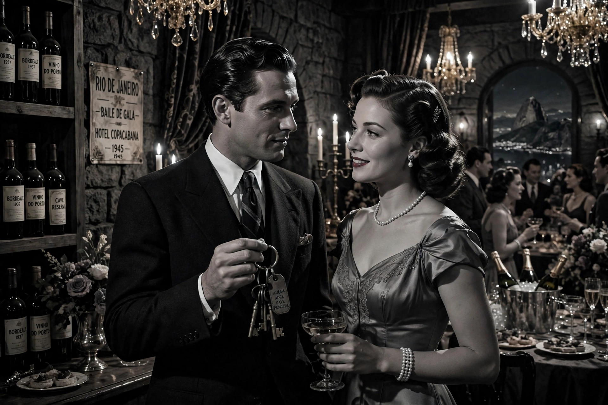

Notorious is a 1946 American film noir spy thriller directed and produced by Alfred Hitchcock, written by Ben Hecht. It stars Ingrid Bergman as Alicia Huberman, the disgraced daughter of a convicted Nazi spy, who is recruited by American agent T. R. Devlin (Cary Grant) to infiltrate a group of Nazis in post-war Rio de Janeiro, and Claude Rains as the Nazi sympathiser she must seduce and marry. The film is widely regarded as one of Hitchcock's finest works.
| Notorious | |
|---|---|
| Directed by | Alfred Hitchcock |
| Screenplay by | Ben Hecht |
| Starring | Cary Grant, Ingrid Bergman, Claude Rains |
| Release date | 1946 |
| Studio | RKO Pictures |
Alicia's mission requires her to renew contact with Alexander Sebastian, an old admirer now harbouring Nazi fugitives smuggling uranium ore in wine bottles. She marries him, at the cost of Devlin's trust and her own health: Sebastian and his domineering mother discover her duplicity and poison her slowly with coffee. In the celebrated climax, Devlin rescues the failing Alicia down a grand staircase in full view of the Nazis, leaving Sebastian to face his comrades' suspicions.
The film originated as a David O. Selznick production and was sold to RKO, becoming Hitchcock's first producing credit. It is famous for a kissing scene between Grant and Bergman that circumvented the Production Code's limits by breaking the embrace into brief segments, and for Hitchcock's use of the uranium "MacGuffin" — reportedly bringing him to the attention of the FBI before the atomic bomb was public knowledge. Mature themes of love, duty, alcoholism and sexual bargaining mark it as among the most psychologically complex of Hitchcock's films.
Notorious was selected for the National Film Registry in 2006.
See also: Cary Grant · Film noir